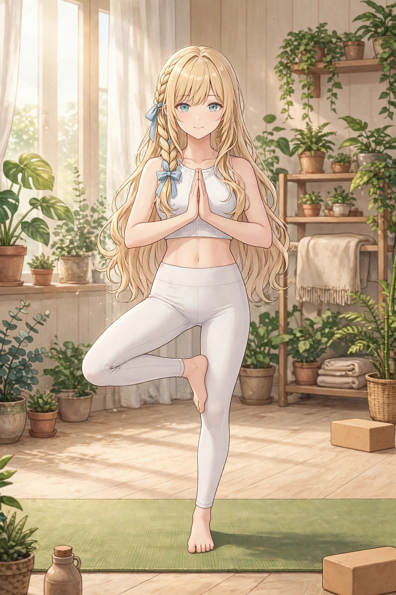

ホットヨガスタジオ LAVA 梅田店
ホットヨガ梅田男女共用初心者向けあり
男女共用のホットヨガ専門店です。温かいスタジオで行う60分のレッスンが中心で、基本のポーズを扱う初心者向けから、部位や目的に合わせたクラスまで種類が多く用意されています。個室シャワ…

大阪でヨガスタジオを探すとき、まず決めたいのは「どのエリアで通うか」です。このポータルで掲載中の大阪府のスタジオは12店。梅田を中心に、心斎橋・本町・天王寺・谷町・南堀江・西中島と広がっています。この記事では、掲載データをもとにエリアごとの傾向と、目的に合った選び方を整理しました。
梅田エリアには、ホットヨガ専門のLAVA梅田店、ヨガ・ピラティス・骨盤ワークを組み合わせるスタジオ・ヨギー OSAKA、常温とホットの両方を受けられるzen place yoga mix 梅田など、大型店が集まっています。少し北の中津には、本場インドのヨガを掲げる少人数制のヨガビニ大阪もあります。駅からの近さで選ぶなら梅田・中津が便利で、仕事帰りに寄りやすい立地がそろっています。
心斎橋のYoga Studio Flowは定員8名までの少人数制で、呼吸と解剖学に基づく指導が特徴です。南堀江のstudio SAPOは全クラス常温で、ママ＆マタニティや産後クラスもあります。本町のヨガ ヴィオラトリコロールは2005年創業の老舗で、キッズヨガまで幅広く対応しています。落ち着いた雰囲気で通いたい人はミナミ側が候補になります。
天王寺エリアには女性専用ホットヨガのロイブ天王寺店と、複数プログラムを受けられるスタジオバランス あべの店があります。谷町四丁目のYOGA STUDIO Mercyはアシュタンガ中心で早朝マイソールがある本格派。西中島のa.z.yogastudioは各クラス5名までの少人数制で、夜19時・20時45分のクラスがあり仕事帰りに使いやすい構成です。自宅や職場の近くで選ぶと、続ける負担が減ります。
大阪の掲載店では、ホットヨガ専門はLAVA梅田・ロイブ天王寺・ビープラス天満橋など。たっぷり汗をかく爽快感が好きな人に向いています。常温はFlow、Mercy、SAPO、a.zなど少人数制の店に多く、自分のペースでポーズを確認しながら進めたい人に合っています。迷ったら、まず体験レッスンで室温の感じを確かめるのがおすすめです。
掲載店の体験は、LAVA梅田とロイブ天王寺が0円（手ぶらセット付き・対象条件あり）、ヨガビニ大阪が500円、スタジオ・ヨギー OSAKAが通常1,000円、Flowが60分1,500円など、始めやすい価格がそろっています（いずれも公式記載の要約で、条件は公式サイトで確認してください）。服装や持ち物は体験の案内に従えばよく、最初から道具をそろえる必要はありません。
男女共用のホットヨガ専門店です。温かいスタジオで行う60分のレッスンが中心で、基本のポーズを扱う初心者向けから、部位や目的に合わせたクラスまで種類が多く用意されています。個室シャワ…
ヨガ・ピラティス・骨盤（ペルヴィス）ワークを組み合わせる全国展開のスタジオです。ヨガはビギナー／フロー／アライメント／リラックス／アロマヨガ／メディテーション／ヨガニドラーなど段階…
定員8名までの少人数制スタジオです。呼吸と解剖学に基づき、体の構造に沿って無理なく動く指導を掲げています。グループレッスンのほか、パーソナルレッスン、指導者養成講座、ワークショップ…
女性専用のホットヨガスタジオです。ホットヨガを中心に、ピラティスやエクササイズ、ダンス系まで幅広いプログラムを用意していると案内されています。シャワールーム・パウダールームがあり、…
アシュタンガヨガを中心とする少人数制スタジオです。早朝マイソール、ビギナークラス、ハタヨガ、陰ヨガ、シニアヨガなどがあり、指導者養成の認定校をうたっています。…
各クラス5名までの少人数制スタジオです。夜19:00／20:45のクラスがあり、仕事帰りの利用を案内しています。ヨガに骨格調整とピラティスの要素を取り入れた初心者向けクラスなど、難…



あわせてチェック｜Simple Yoga Lifeのおすすめ
・特集：韓国ヨガウェア（ゼクシーミックス）…人気レギンスや上下セットを、楽天の実測価格とあわせて紹介しています
・セラフィナのスタンプ＆おうちヨガ用品コーナー…マットやブロックなどのおうちヨガ用品と、LINEスタンプをまとめています